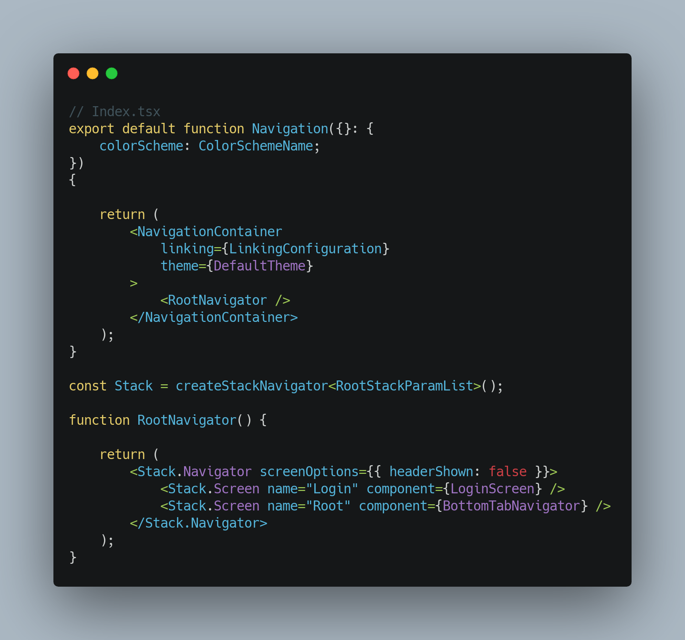
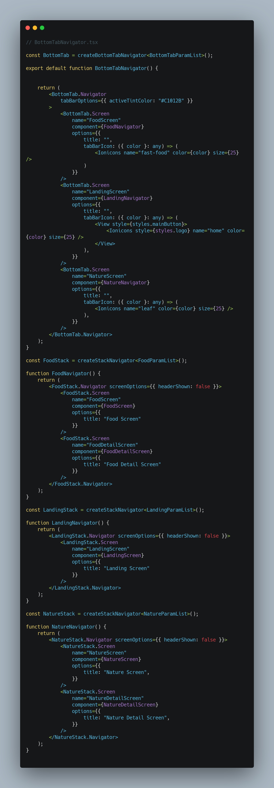

Omdat de werknemers van Simac gebruik maken van zowel IOS als Anrdoid hebben we gekozen om de app te ontwikkelen in React Native, aangezien de code base hiervan voor beide operating systems gebruikt kan worden. De back-end wordt in Python ontwikkeld, maar in het vroege stadium van de app ontwikkeling heb ik verschillende functies die te maken hebben met data opslag en uitwisseling, met Firebase opgelost om te onderzoeken of dit een goede vervanger is voor de traditionele back-ends van applicaties.
React Native app waarbij ik met Firebase expirimenteer.
Development Stack onderbouwing
Voor de frontend is er gekozen voor React Native. Het grootste voordeel dat React Native met zich mee brengt
is dat de code herbruikbaar is voor zowel IOS, Android en het web. Dit is belangrijk aangezien de medewerkers
van Simac gebruik maken van zowel Android als IOS devices. Waarom React Native tegenover andere progressive web apps
zoals Angular, Vue of Ionic? React Native maakt gebruik van Native UI controls waar andere progressive web apps dit
niet doen. Aangezien onze focus voor de app ligt in het daadwerkelijk uitbrengen van de app in de app/play store
en er al developers in het team bekend zijn met React Native, hebben we voor deze keuze gekozen om in een korte tijd
een proof of concept neer te zetten die het concept voor de opdrachtgever duidelijk en tastbaar maakt.
Voor de back-end hebben we gekozen voor Python aangezien deze taal ook bekend is in ons team van developers en Python
daarnaast goed met React Native samewerkt. Verder was ik benieuwd naar de werking van Firebase, aangezien je door middel
van Firebase een hoop tijd en geld kunt besparen doordat Google de backend zaken voor je regelt. Door middel van het maken
van een login systeem heb ik kunnen concluderen dat Firebase inderdaad er weinig development tijd kost en dat dit voor Simac
erg interessant kan zijn. In de 2de helft van het project wil ik graag onderzoeken of Firebase in combinatie met een zelf
gebouwde Python API samen kan werken als backend.
Voor we iets met Firebase kunnen gaan doen moeten we onze React Native applicatie verbinden met onze Simac Firebase API. Hier kun je een Firebase project maken. Zodra je klaar bent met het maken van een Firebase project, is het tijd om de API gegevens van je Firebase project over te nemen en in een firebase config file in je React Native applicatie te plaatsen. Wanneer je dit op de juiste manier hebt gedaan kun je firebase vanuit deze file exporteren. Nu kun je vanuit overal in je React Native project firebase importeren met de juiste configuratie naar jouw Firebase project!
Vervolgens importeren we onze Firebase config file in de login screen samen met de useState hook en React Native Alert. We maken een state aan voor het email adres en een voor het wachtwoord. De initial value is van beide een lege string. Zodra de user de text inputs invuld worden deze states geset met de value van de text inputs. Zodra de user op de login button klikt wordt de onLoginPress functie aangeroepen en zal firebase checken of de email & password combinatie overeenkomt met een van de gebruikers die in jouw Firebase project geregistreerd staan. Zodra dit het geval is worden de gegevens van deze user opgehaald en wordt de user doorverwezen naar de landing screen. Wanneer deze combinatie niet overeenkomt wordt er in een Alert een error melding getoond.

Zodra gebruikers hun wachtwoord vergeten, moeten ze de optie hebben om een nieuw wachtwoord aan te vragen. Firebase helpt ons ook hiermee, door een state 'newPassword' aan te maken, kan de gebruiker zijn email in een textInput typen en wordt newPassword met het email adres van de gebruiker geset. ( userEmail was hier een betere state naam geweest achteraf gezien ) Zodra de send button word geklikt, wordt de resetPassword functie aangeroepen waarin firebase controleert of het email adres in jouw firebase project bestaat, zodra dat zo is wordt er een reset wachtwoord mailtje naar het ingevulde mail adres gestuurd.

Achter de schermen houdt Firebase in de local storage van een device bij welke user id ingelogd is. Hier kunnen we gebruik van maken door in een useEffect hook te checken of dit het geval is, zodra dit het geval is kunnen we de data van deze gebruiker ophalen en de gebruiker door verwijzen naar de landing pagina, zodat de user niet steeds opnieuw zijn inlog gegevens hoeft in te voeren. Een grote UX win als je het mij vraagt.

Met behulp van de React Navigation library heb ik de complete navigatie van de app gebouwd. Het begint bovenaan de mappen structuur in de App.tsx, binnen een safeAreaProvider is een component genaamd Navigation te vinden. Hierbij wordt een colorScheme prop meegegeven, hier doen we voor nu nog niks mee maar dit geeft ons later de optie om themability toe te voegen zoals bijvoorbeeld dark theme.
Vervolgens zijn alle bestanden die met de navigatie te maken hebben, te vinden in de map navigation. Hierin staat de Index.tsx waar de component navigation (die we in App.tsx zagen) te vinden is. deze function component returnt een navigation container met daarin de RootNavigator component. Deze wordt hieronder gedefinieert en bestaat uit 2 stack screens binnen een stack navigator. Stack screen nummer 1 is de LoginScreen, hier komt de gebruiker op uit bij het opstarten van de app. Stack screen nummer 2 is de BottomTabNavigator, dit is een component die voor de tab navigatie in de app zorgt.
Vervolgens is de laatste stap de BottomTabNavigator zelf, deze is in de navigation map als BottomTabNavigator.tsx te vinden. Deze bestaat uit 3 BottomTabScreens en elk van deze BottomTabScreens krijgt een component mee gegeven die onderaan worden gedefinieert. De Food/Landing/Nature Navigators bezitten alle 3 weer een component die uit het mapje Screens wordt gehaald. Deze componenten uit Screens is waar de uiteindelijke code van de schermen komt te staan, daar wordt alles qua styling en functionaliteiten gedaan voor de schermen die de user krijgt te zien.

Door de link hieronder te klikken en vervolgens op deze webpagina de QR code te scannen zal de app op je telefoon geopend worden.
Hiervoor is het wel van belang dat je Expo Go op je telefoon hebt gedownload en je een Android device hebt.
Username: demo@hotmail.com
Password: demo123!